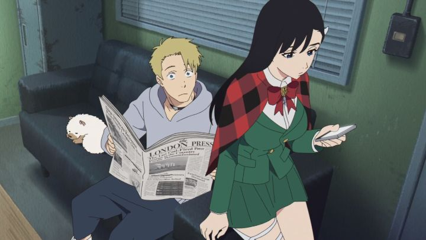

Disclaimer: This review covers the three-episode 2020 anime OVA "Burn the Witch" (also available in a 63-minute film format).I was curious about the anime "Burn the Witch" when it was announced. As a three-episode OVA, it was short enough to take a chance on. And the part that caught everyone else's attention was that it was based on a short manga series by Tito Kubo, the author and artist behind "Bleach," one of the popular shonen anime from the 2000's. Seeing a new animation might have sparked hope for a "Bleach" anime continuation, and sure enough, a new season was announced just a couple years later, long after it originally ended. But that's outside the scope of this review: we're talking about "Burn."... although fans will be curious to know that "Burn the Witch" turns out to be a canonical spin-off to "Bleach," with concepts of a secret society (with the same name, no less) fighting large monsters (invisible to normal people) in a modern-day town. The main differences are the setting (in England instead of Japan), the monsters (they're referred to as "Dragons" this time), and possibly the time period (although both could be described generically as "modern-day"). Watching "Bleach" isn't at all necessary to watch "Burn," but the reveal at the end linking the two series is a nice little "whoa" moment. There are some good things about "Burn," although it's not with problems, including a common one in anime OVA's - it has the need to tell you about its universe in a very short timeframe, and doesn't know where to edit things out. In this world, invisible Dragons roam modern day London, and hunting or controlling them is tasked to an organization of magic wielders, living in a mirror world called "Reverse London." Ninny and Noel are the two lead "witches," able to ride broom-like pet dragons and cast defensive and offensive spells with their tools. Ninny is the series' posterchild, blonde, headstrong and confident, eager to earn extra merit points for challenging tasks. She's also an idol star in her spare time, apparently. Noel is her frequent co-worker, with long dark hair, a quiet demeanor and a constant stare of pessimistic boredom - she'll take on difficult jobs for the extra cash. Both are good at what they do, but in this adventure, get more than they can handle thanks to their friends, the naive dimwit Balgo and clingy Macy, both of which naturally develop powers that lure dragons to them (known as "Dragonclad")... a problem, since the giants destroy everything in their path. Their latest destruction gets the attention of the upper Directors of the organization, and their involvement and lack of sympathy might mean the deaths of the friends. It's not a bad setup, and might have worked with a full-length movie (perhaps an extra 20 minutes or so). But it's not a small task to explain an organization, a world where its existance is necessary, and all of the "important" characters within it. In a TV series, this might be revealed over the course of several episodes, not three. I was left simultaneously overwhelmed and still hungry for more. The head characters in the society are effortlessly cool, with the main focus being on Bruno for this story, but even the short bits of his peers are enticing. I'd be happy to watch a full season arc featuring all of them, but time is precious in this OVA, so they get left behind until needed.  And that makes it all the more frustrating for the OVA to spend so much of its precious time on characters that could only be described as annoying and insufferable. Very much par for the genre, the lead heroes in Ninny and Noel are cool, capable and funny, but their best friends are idiots and frequently get in the way. Balgo gets nearly as much screentime as the two leads, and is a hapless loser with a cute dog and a romantic pinning for Noel (which might be sweetly returned). Every word out of his mouth is silly and played for laughs, but I can easily imagine future storylines of the franchise focusing on him as the secretly-important dansel-in-distress. I sincerely hope no such plans are in place, and the less he talks or appears, the better. Macy's limited arc is similar in its consequences, and more compelling, but the possibly mult-dimensional character is quickly reduced to being clingy and lacking self-confidence (she was Ninny's idol group partner, and frequently cries about her false assumption that Ninny doesn't like her). The OVA would have been better if these two characters had no relation to the leads, and if I could be assured they'd never appear again. Why not have dragons appear randomly, and just show the cool heroes defeating them while berating each other? But no, the two seem destined to be part of the series for the long haul, even if just in a small capacity, should it continue.Aside from the story, the production values are a draw, although not as strong as I'd like. I was surprised to learn Studio Colorido worked on this, and I liked their previous films. For action shots with 3D compositing, the effects and 2D animation is sweet. But there isn't as much of it as I expected, and most of the cuts look on par for a long-running shonen anime (this is not a good thing). None of the battle setpieces are super impressive, and action fans could cherry-pick better moments in recent shonen TV. Generally, Tite Kubo's punk-character designs shine, giving a unique visual for how modern "witches" could look, and giving the cool characters sneering faces that I'd put as a desktop wallpaper. He's good at what he does. While the sound and music design is cool, I admit the English dub is kinda poor on this one, and would recommend the Japanese dub first, although that's more a problem on the characters themselves rather than the actors. A brief note on the Viz Media Bluray in the US: it allows you to watch both the "film version" and the "OVA version." They appear identical, except the OVA adds slightly different opening and ending sequences to each episode (the film version includes this once at the very end). It's a shame that the three episodes are in equal parts promising, fun, and annoying. Two out of three is a 66%, probably an accurate portrayal of the OVA. If you're already a frequent fan of the shonen genre, this experiment doesn't ask too much of your time, and "Burn the Witch" has a unique take on witches to make it worth an afternoon.
- "Ani" More reviews can be found at : https://2danicritic.github.io/ Previous review: review_Bunuel_in_the_Labyrinth_of_the_Turtles Next review: review_C_-_Control_-_Money_of_Soul_and_Possibility